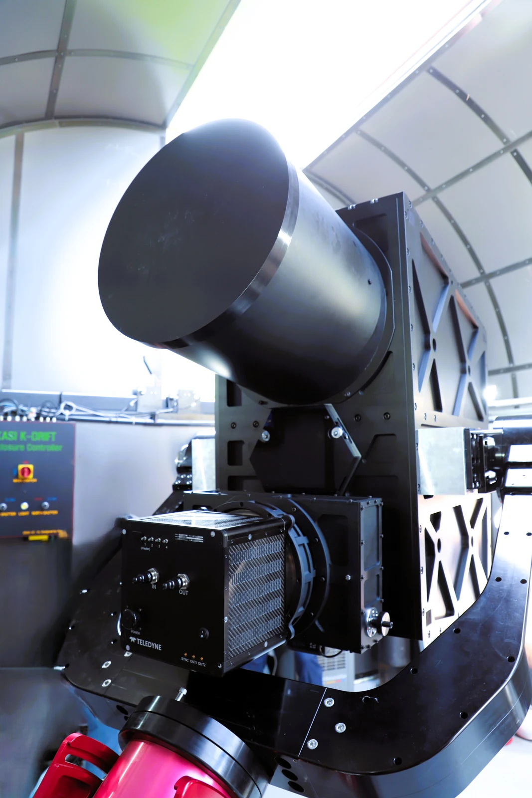

K-DRIFT / WEBSITE DESIGN STUDY
두 가지 방식으로 만나는
K-DRIFT.
연구를 차분하게 소개하는 A안, 이미지로 탐사를 경험하는 D안.
각 시안을 열어 첫 화면부터 연구 성과와 팀 소개까지 살펴보세요.

간결한 연구 프로젝트형
밝은 배경, 명확한 정보 구조.
연구 목적과 대표 성과를 빠르게 이해합니다.

이미지 중심의 탐사형
넓은 사진, 짙은 배경, 관측 영상.
프로젝트의 현장과 연구를 시각적으로 만납니다.
2026.10.19 · 구성원 의견 수렴용 디자인 시안 · 두 안 모두 실제 archive 자료를 사용했습니다.
관측 성과는 2026.01.27 보도자료를 기준으로 소개하며, 팀 명단 전체는 확정 후 추가할 수 있습니다.